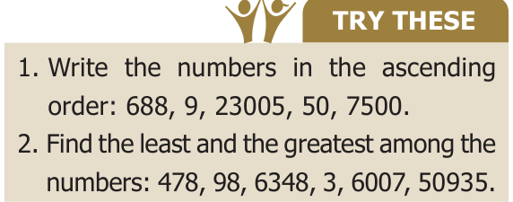
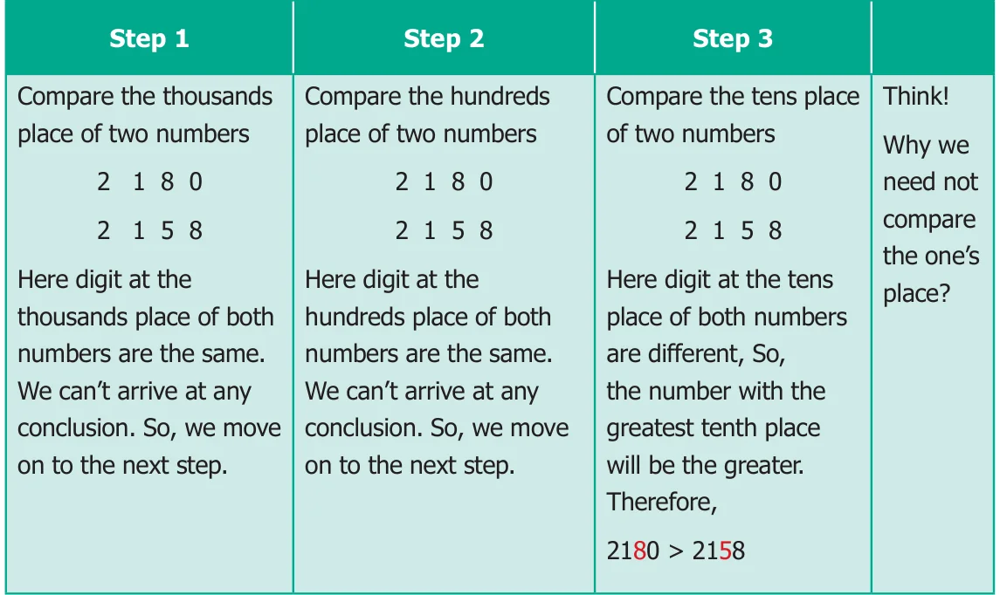
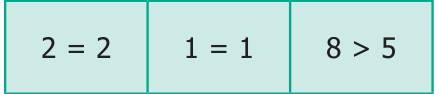
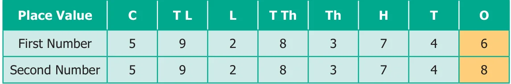
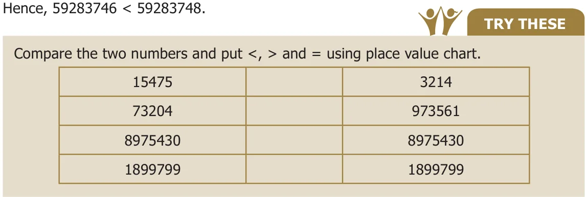
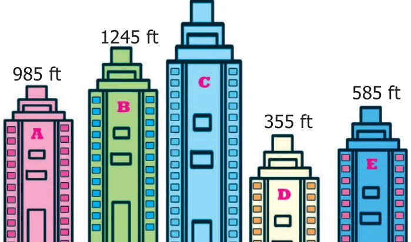
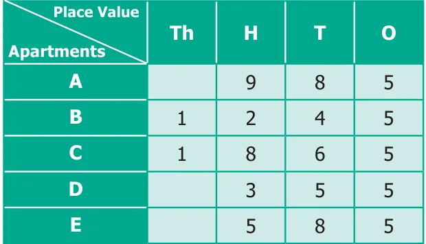
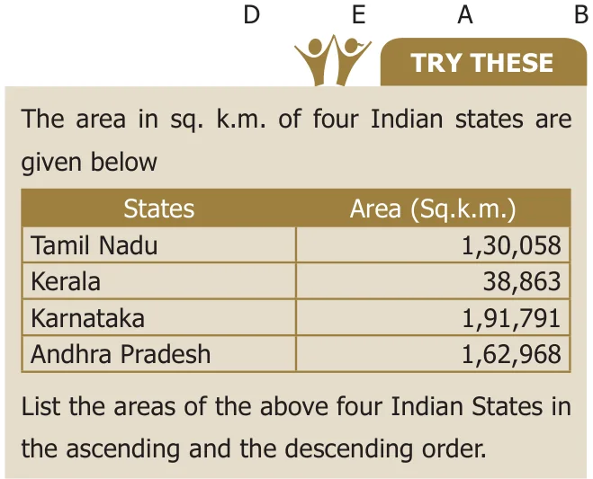
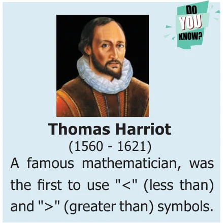

<!DOCTYPE html>
<html lang="en">
<head>
<meta charset="UTF-8">
<meta name="viewport" content="width=device-width,initial-scale=1">
<title>1.4 Comparison of Numbers — Numbers</title>
<meta name="description" content="Class 6 Mathematics · Term 1 · Numbers · 1.4 Comparison of Numbers">
<link rel="icon" href="data:image/svg+xml,<svg xmlns='http://www.w3.org/2000/svg' viewBox='0 0 100 100'><text y='.9em' font-size='90'>📘</text></svg>">
<link rel="stylesheet" href="../../../assets/book.css">
<link rel="stylesheet" href="https://cdn.jsdelivr.net/npm/katex@0.16.11/dist/katex.min.css" crossorigin="anonymous">
</head>
<body>
<header class="topbar">
<div class="topbar-in">
  <div class="crumb">
    <span class="c1"><a href="../../../index.html">Library</a> · <a href="../../index.html">Class 6 Mathematics · Term 1</a></span>
    <span class="c2">Numbers · 1.4 Comparison of Numbers</span>
  </div>
  <a class="tb-btn" data-nav="prev" href="../../01-numbers/04-exercise-1.1/index.html" title="Exercise 1.1">←</a>
  <details class="drawer"><summary class="tb-btn" title="Sections in this chapter">☰</summary>
<div class="drawer-panel"><div class="dh">Numbers</div><a href="../01-introduction-1.1/index.html">1.1 Introduction</a><a href="../02-formation-of-large-numbers-1.2/index.html">1.2 Formation of large numbers</a><a href="../03-place-value-chart-1.3/index.html">1.3 Place Value Chart</a><a href="../04-exercise-1.1/index.html">Exercise 1.1</a><a href="../05-comparison-of-numbers-1.4/index.html" aria-current="page">1.4 Comparison of Numbers</a><a href="../06-creating-new-numbers-1.5/index.html">1.5 Creating New Numbers</a><a href="../07-exercise-1.2/index.html">Exercise 1.2</a><a href="../08-use-of-large-numbers-in-daily-life-situations-1.6/index.html">1.6 Use of Large Numbers in Daily Life Situations</a><a href="../09-order-of-operations-1.7/index.html">1.7 Order of Operations</a><a href="../10-exercise-1.3/index.html">Exercise 1.3</a><a href="../11-estimation-of-numbers-1.8/index.html">1.8 Estimation of numbers</a><a href="../12-exercise-1.4/index.html">Exercise 1.4</a><a href="../13-whole-numbers-1.9/index.html">1.9 Whole Numbers</a><a href="../14-properties-of-whole-numbers-1.10/index.html">1.10 Properties of Whole Numbers</a><a href="../15-exercise-1.5/index.html">Exercise 1.5</a><a href="../16-exercise-1.6/index.html">Exercise 1.6; Miscellaneous Practice Problems</a><a href="../17-challenging-problems/index.html">Challenging Problems</a><a href="../18-summary/index.html">Summary</a><a href="../19-ict-corner/index.html">ICT Corner</a></div></details>
  <a class="tb-btn" data-nav="next" href="../../01-numbers/06-creating-new-numbers-1.5/index.html" title="1.5 Creating New Numbers">→</a>
  <button class="tb-btn" data-theme-toggle title="Toggle light / dark" aria-label="Toggle light or dark theme">◐</button>
</div>
<div class="progress"><span style="width:6.8%"></span></div>
</header>
<main class="wrap">
<div class="sec-head">
  <p class="eyebrow"><a href="../index.html">Chapter 1 · Numbers</a></p>
  <h1>1.4 Comparison of Numbers</h1>
  <p class="sec-meta">Textbook pages 10–12 · 10 figures</p>
</div>
<article class="prose">
<p>We are familiar with the concept of comparing numbers and finding the biggest among them. We use symbols &lt;, &gt; and = to compare any two numbers.</p>
<h3 id="s-1-4-1-comparing-numbers-with-unequal-number-of-digits">1.4.1 Comparing numbers with unequal number of digits</h3>
<figure class="fig"></figure>
<ul class="qlist">
<li><span class="mk">1.</span><span class="lt">When we compare the numbers 16090</span></li>
</ul>
<p>and 100616, we have already learnt that the number with more digits is greater.</p>
<p>Hence, 1,00,616 (6 digit number) \(&gt; 16,090 (5\) digit number).</p>
<ul class="qlist">
<li><span class="mk">2.</span><span class="lt">Suppose we are given more than two numbers say 1468, 5, 201, 69 and 70000. Then</span></li>
</ul>
<p>among these, we can immediately say that the number 70000 is the greatest and 5 is the least, based on the number of digits.</p>
<h3 id="s-1-4-2-comparing-numbers-with-equal-number-of-digits">1.4.2 Comparing numbers with equal number of digits</h3>
<p>Think about the situation</p>
<p>In a distance analysis chart, the distance between Chennai and New Delhi is 2180 k.m. and Chennai to Noida is 2158 k.m. respectively. Which city is farther from Chennai?</p>
<figure class="fig table-fig wide"></figure>
<p>Compare the given numbers 2180 and 2158 using the above mentioned steps.</p>
<figure class="fig"></figure>
<p>Hence, \(2180 &gt; 2158\). So, New Delhi is farther from chennai.</p>
<h4 class="callout-h" id="s-example-1-5">Example 1.5</h4>
<p>Compare 59283746 and 59283748 using place value chart.</p>
<h2 class="callout-h" id="s-solution">Solution</h2>
<p>Step 1: Number of digits in the two given numbers are equal.</p>
<p>Step 2: Compare the place values using the place value chart.</p>
<figure class="fig table-fig wide"></figure>
<p>Compare the digits of the two numbers from the highest place value as noted below.</p>
<figure class="fig table-fig wide"></figure>
<p>Here only the digits in the ones place are not equal and \(6 &lt; 8\).</p>
<figure class="fig table-fig wide"></figure>
<h3 id="s-1-4-3-arranging-the-numbers-in-ascending-and-descending-or">1.4.3 Arranging the numbers in ascending and descending order</h3>
<p>The heights of five different</p>
<aside class="sidenote"><p>1865 ft</p></aside>
<p>apartments named as A, B, C, D and E in a locality are 985 feet, 1245 feet, 1865 feet, 355 feet and 585 feet respectively. They are shown according to their heights as shown in Fig. 1.1. Can you arrange them in the ascending order of their heights? Yes, We can arrange the numbers by comparing them based on the place values. Fig. 1.1</p>
<figure class="fig"></figure>
<h4 class="callout-h" id="s-step-1">Step 1</h4>
<figure class="fig table-fig"></figure>
<p>Compare the 4 digit numbers 1245 and 1865. By following the steps mentioned for comparing the numbers having same number of digits, we get \(1865 &gt; 1245\). The tallest apartment is ‘C’ (1865 feet). The next tallest apartment is ‘B’ (1245 feet).</p>
<h4 class="callout-h" id="s-step-2">Step 2</h4>
<p>Compare the three digit numbers 985, 585 and 355. Using the above table, we get, \(985 &gt; 585 &gt; 355\). The smallest among them is 355.</p>
<p>Hence we write the heights of the apartments in ascending order as,</p>
<div class="mathblock"><p>\(355 &lt; 585 &lt; 985 &lt; 1245 &lt; 1865\)</p></div>
<figure class="fig table-fig"></figure>
<figure class="fig side-fig"></figure>
</article>
<nav class="pager"><a class="" data-nav="prev" href="../../01-numbers/04-exercise-1.1/index.html"><span class="dir">← Previous</span><span class="t">Exercise 1.1</span><span class="ch">Numbers</span></a><a class="nx" data-nav="next" href="../../01-numbers/06-creating-new-numbers-1.5/index.html"><span class="dir">Next →</span><span class="t">1.5 Creating New Numbers</span><span class="ch">Numbers</span></a></nav>
</main><footer class="site">Generated from the source textbook PDFs · text, figures and exercises belong to their respective publishers.</footer><script defer src="https://cdn.jsdelivr.net/npm/katex@0.16.11/dist/katex.min.js" crossorigin="anonymous"></script>
<script defer src="https://cdn.jsdelivr.net/npm/katex@0.16.11/dist/contrib/auto-render.min.js" crossorigin="anonymous"
  onload="renderMathInElement(document.body,{delimiters:[
    {left:'\\(',right:'\\)',display:false},
    {left:'$$',right:'$$',display:true},
    {left:'\\[',right:'\\]',display:true}],throwOnError:false,ignoredTags:['script','noscript','style','textarea','pre','code']})"></script>
<script src="../../../assets/book.js"></script>
<script defer src="../../../../assets/search.js?v=1789782769"></script>
<script defer src="../../../../assets/screenshot.js?v=2"></script>
</body>
</html>
